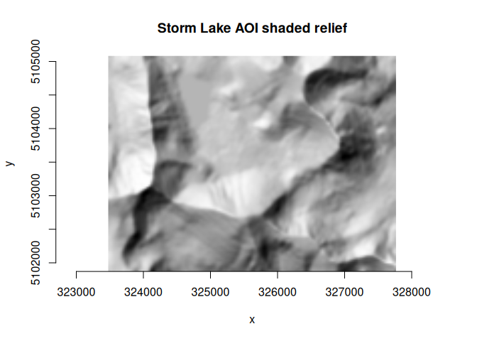
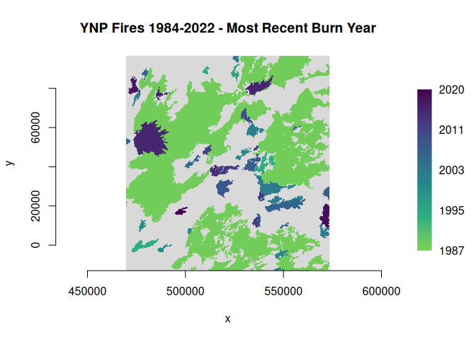

Using 'gdal' CLI algorithms from R
Source:vignettes/articles/use-gdal-cli-from-r.Rmd
use-gdal-cli-from-r.RmdBackground
GDAL 3.11 added a framework for a unified command line interface (CLI) with a concept of algorithms that can be run on the command line, or that can be automatically discovered and invoked programmatically. The following resources provide information on the new CLI framework:
- GDAL CLI Modernization (pdf slides), E. Rouault, H. Butler and D. Baston, OSGeo webinar 03-June-25
- RFC 104: Adding a “gdal” front-end command line interface
- GDAL programs: “gdal” application
- cf. Python bindings: How to use “gdal” CLI algorithms from Python
gdalraster as of version 2.2.0 provides bindings
that enable access to GDAL CLI algorithms and the
GDALAlgorithm API from R.
Development status
The GDAL project states that the new CLI framework
“is provisionally provided as an alternative interface to GDAL and OGR command line utilities. The project reserves the right to modify, rename, reorganize, and change the behavior until it is officially frozen via PSC vote in a future major GDAL release. The utility needs time to mature, benefit from incremental feedback, and explore enhancements without carrying the burden of full backward compatibility. Your usage of it should have no expectation of compatibility until that time.” (https://gdal.org/en/latest/programs/#gdal-application)
The initial bindings in gdalraster 2.2.0 will evolve over future releases. The bindings are considered experimental until the upstream API is declared stable. Breaking changes in minor version releases are possible until then. Please use with those cautions in mind. Bug reports may be filed at: https://github.com/USDAForestService/gdalraster/issues.
Command discovery and usage info
The function gdal_commands() prints a list of available
commands to the console along with a short description and help URL for
each. A data frame containing the command strings, descriptions and URLs
is returned invisibly. By default, the full list of available commands
and their subcommands is returned. The optional argument
recurse can be set to FALSE to list only the
top-level commands without their subcommands.
library(gdalraster)
#> GDAL 3.11.3 (released 2025-07-12), GEOS 3.12.2, PROJ 9.4.1
## top-level commands
gdal_commands(recurse = FALSE)
#> convert:
#> Convert a dataset (shortcut for 'gdal raster convert' or 'gdal vector convert').
#> https://gdal.org/programs/gdal_convert.html
#>
#> driver:
#> Command for driver specific operations.
#>
#> info:
#> Return information on a dataset (shortcut for 'gdal raster info' or 'gdal vector info').
#> https://gdal.org/programs/gdal_info.html
#>
#> mdim:
#> Multidimensional commands.
#> https://gdal.org/programs/gdal_mdim.html
#>
#> pipeline:
#> Execute a pipeline (shortcut for 'gdal raster pipeline' or 'gdal vector pipeline').
#> https://gdal.org/programs/gdal_pipeline.html
#>
#> raster:
#> Raster commands.
#> https://gdal.org/programs/gdal_raster.html
#>
#> vector:
#> Vector commands.
#> https://gdal.org/programs/gdal_vector.html
#>
#> vsi:
#> GDAL Virtual System Interface (VSI) commands.
#> https://gdal.org/programs/gdal_vsi.htmlA character string can also be given to filter for commands containing specific text.
## list commands relevant to raster data
gdal_commands("raster")
#> raster:
#> Raster commands.
#> https://gdal.org/programs/gdal_raster.html
#>
#> raster aspect:
#> Generate an aspect map
#> https://gdal.org/programs/gdal_raster_aspect.html
#>
#> raster calc:
#> Perform raster algebra
#> https://gdal.org/programs/gdal_raster_calc.html
#>
#> raster clean-collar:
#> Clean the collar of a raster dataset, removing noise.
#> https://gdal.org/programs/gdal_raster_clean_collar.html
#>
#> raster clip:
#> Clip a raster dataset.
#> https://gdal.org/programs/gdal_raster_clip.html
#>
#> raster color-map:
#> Generate a RGB or RGBA dataset from a single band, using a color map
#> https://gdal.org/programs/gdal_raster_color_map.html
#>
#> raster contour:
#> Creates a vector contour from a raster elevation model (DEM).
#> https://gdal.org/programs/gdal_raster_contour.html
#>
#> raster convert:
#> Convert a raster dataset.
#> https://gdal.org/programs/gdal_raster_convert.html
#>
#> raster create:
#> Create a new raster dataset.
#> https://gdal.org/programs/gdal_raster_create.html
#>
#> raster edit:
#> Edit a raster dataset.
#> https://gdal.org/programs/gdal_raster_edit.html
#>
#> raster fill-nodata:
#> Fill nodata raster regions by interpolation from edges.
#> https://gdal.org/programs/gdal_raster_fill_nodata.html
#>
#> raster footprint:
#> Compute the footprint of a raster dataset.
#> https://gdal.org/programs/gdal_raster_footprint.html
#>
#> raster hillshade:
#> Generate a shaded relief map
#> https://gdal.org/programs/gdal_raster_hillshade.html
#>
#> raster index:
#> Create a vector index of raster datasets.
#> https://gdal.org/programs/gdal_raster_index.html
#>
#> raster info:
#> Return information on a raster dataset.
#> https://gdal.org/programs/gdal_raster_info.html
#>
#> raster mosaic:
#> Build a mosaic, either virtual (VRT) or materialized.
#> https://gdal.org/programs/gdal_raster_mosaic.html
#>
#> raster overview:
#> Manage overviews of a raster dataset.
#> https://gdal.org/programs/gdal_raster_overview.html
#>
#> raster overview add:
#> Adding overviews.
#> https://gdal.org/programs/gdal_raster_overview_add.html
#>
#> raster overview delete:
#> Deleting overviews.
#> https://gdal.org/programs/gdal_raster_overview_delete.html
#>
#> raster pipeline:
#> Process a raster dataset.
#> https://gdal.org/programs/gdal_raster_pipeline.html
#>
#> raster pixel-info:
#> Return information on a pixel of a raster dataset.
#> https://gdal.org/programs/gdal_raster_pixel_info.html
#>
#> raster polygonize:
#> Create a polygon feature dataset from a raster band.
#> https://gdal.org/programs/gdal_raster_polygonize.html
#>
#> raster reclassify:
#> Reclassify values in a raster dataset
#> https://gdal.org/programs/gdal_raster_reclassify.html
#>
#> raster reproject:
#> Reproject a raster dataset.
#> https://gdal.org/programs/gdal_raster_reproject.html
#>
#> raster resize:
#> Resize a raster dataset without changing the georeferenced extents.
#> https://gdal.org/programs/gdal_raster_resize.html
#>
#> raster roughness:
#> Generate a roughness map
#> https://gdal.org/programs/gdal_raster_roughness.html
#>
#> raster scale:
#> Scale the values of the bands of a raster dataset.
#> https://gdal.org/programs/gdal_raster_scale.html
#>
#> raster select:
#> Select a subset of bands from a raster dataset.
#> https://gdal.org/programs/gdal_raster_select.html
#>
#> raster set-type:
#> Modify the data type of bands of a raster dataset.
#> https://gdal.org/programs/gdal_raster_set_type.html
#>
#> raster sieve:
#> Remove small polygons from a raster dataset.
#> https://gdal.org/programs/gdal_raster_sieve.html
#>
#> raster slope:
#> Generate a slope map
#> https://gdal.org/programs/gdal_raster_slope.html
#>
#> raster stack:
#> Combine together input bands into a multi-band output, either virtual (VRT) or materialized.
#> https://gdal.org/programs/gdal_raster_stack.html
#>
#> raster tile:
#> Generate tiles in separate files from a raster dataset.
#> https://gdal.org/programs/gdal_raster_tile.html
#>
#> raster tpi:
#> Generate a Topographic Position Index (TPI) map
#> https://gdal.org/programs/gdal_raster_tpi.html
#>
#> raster tri:
#> Generate a Terrain Ruggedness Index (TRI) map
#> https://gdal.org/programs/gdal_raster_tri.html
#>
#> raster unscale:
#> Convert scaled values of a raster dataset into unscaled values.
#> https://gdal.org/programs/gdal_raster_unscale.html
#>
#> raster viewshed:
#> Compute the viewshed of a raster dataset.
#> https://gdal.org/programs/gdal_raster_viewshed.html
#>
#> vector rasterize:
#> Burns vector geometries into a raster.
#> https://gdal.org/programs/gdal_vector_rasterize.htmlThe function gdal_usage() prints a help message to the
console for a specific command.
gdal_usage("raster convert")
#> Usage: raster convert [OPTIONS] <INPUT> <OUTPUT>
#>
#> Convert a raster dataset.
#>
#> Positional arguments:
#> -i, --input <INPUT>
#> Input raster dataset
#> [required]
#> -o, --output <OUTPUT>
#> Output raster dataset
#> [created by algorithm]
#> [required]
#>
#> Options:
#> -f, --of, --format, --output-format <OUTPUT-FORMAT>
#> Output format
#> --co, --creation-option <KEY>=<VALUE>
#> Creation option
#> [may be repeated]
#> --overwrite
#> Whether overwriting existing output is allowed
#> [default: FALSE]
#> [mutually exclusive with --append]
#> --append
#> Append as a subdataset to existing output
#> [default: FALSE]
#> [mutually exclusive with --overwrite]
#>
#> Advanced options:
#> --oo, --open-option <KEY>=<VALUE>
#> Open options
#> [may be repeated]
#> --if, --input-format <INPUT-FORMAT>
#> Input formats
#> [may be repeated]
#>
#>
#> For more details: https://gdal.org/programs/gdal_raster_convert.htmlRunning CLI algorithms
A convenient way to access a CLI algorithm and run it is to use the
gdal_run() function. This function accepts a command
string, along with its argument values given in a character vector or
named list. It attempts to parse the algorithm arguments and then run
the algorithm on the given input data. The return value is an object of
class GDALAlg.
If you do not need to access output value(s) of the algorithm, you can
call gdal_run() without assigning its return value. More
commonly, the return value is assigned to a variable so that algorithm
output can be accessed via methods of the GDALAlg
object.
Raster examples
raster convert
In this example, the input and output datasets are given as positional arguments which do not have to be named. They could instead be given as named arguments if preferred for clarity.
## convert storml_elev.tif to GeoPackage raster
f_tif <- system.file("extdata/storml_elev.tif", package = "gdalraster")
f_gpkg <- file.path(tempdir(), "storml_elev.gpkg")
args <- c("--overwrite", f_tif, f_gpkg)
(alg <- gdal_run("raster convert", args))
#> 0...10...20...30...40...50...60...70...80...90...100 - done.
#> C++ object of class GDALAlg
#> Name : convert
#> Description : Convert a raster dataset.
#> Help URL : https://gdal.org/programs/gdal_raster_convert.html
# obtain the output as a GDALRaster object
(ds <- alg$output())
#> C++ object of class GDALRaster
#> Driver : GeoPackage (GPKG)
#> DSN : /tmp/Rtmp1MQDgw/storml_elev.gpkg
#> Dim : 143, 107, 1
#> CRS : NAD83 / UTM zone 12N (EPSG:26912)
#> Res : 30.000000, 30.000000
#> Bbox : 323476.071971, 5101871.983031, 327766.071971, 5105081.983031
alg$release()Note that the release() method of the
GDALAlg object was called after assigning its output raster
dataset to a variable. The release() method closes datasets
that were opened by the algorithm and releases resources. It is good
practice to release the algorithm after assigning the output, or
otherwise completing work with the GDALAlg object. However,
if release() is not called explicitly, the algorithm will
still be released when the object is garbage collected.
raster hillshade
Input datasets for algorithms can be given either as text strings as
they would be in command-line usage (i.e., filename, URL, database
connection string, etc.), or as objects of class GDALRaster
or GDALVector. For object input, argument values must be
specified in list form. This example uses the output
elevation dataset from "raster convert" above to generate a
hillshade raster. The output of the "raster hillshade"
algorithm is specified as an in-memory dataset (MEM format) so the
required output filename can be given as empty string
("").
gdal_usage("raster hillshade")
#> Usage: raster hillshade [OPTIONS] <INPUT> <OUTPUT>
#>
#> Generate a shaded relief map
#>
#> Positional arguments:
#> -i, --input <INPUT>
#> Input raster dataset
#> [required]
#> -o, --output <OUTPUT>
#> Output raster dataset
#> [required]
#>
#> Options:
#> -f, --of, --format, --output-format <OUTPUT-FORMAT>
#> Output format ("GDALG" allowed)
#> --co, --creation-option <KEY>=<VALUE>
#> Creation option
#> [may be repeated]
#> --overwrite
#> Whether overwriting existing output is allowed
#> [default: FALSE]
#> -b, --band <BAND>
#> Input band (1-based index)
#> [default: 1]
#> -z, --zfactor <ZFACTOR>
#> Vertical exaggeration used to pre-multiply the elevations
#> --xscale <XSCALE>
#> Ratio of vertical units to horizontal X axis units
#> --yscale <YSCALE>
#> Ratio of vertical units to horizontal Y axis units
#> --azimuth <AZIMUTH>
#> Azimuth of the light, in degrees
#> [default: 315]
#> --altitude <ALTITUDE>
#> Altitude of the light, in degrees
#> [default: 45]
#> --gradient-alg <GRADIENT-ALG>
#> Algorithm used to compute terrain gradient
#> [Horn|ZevenbergenThorne]
#> [default: Horn]
#> --variant <VARIANT>
#> Variant of the hillshading algorithm
#> [regular|combined|multidirectional|Igor]
#> [default: regular]
#> --no-edges
#> Do not try to interpolate values at dataset edges or close to nodata values
#>
#> Advanced options:
#> --if, --input-format <INPUT-FORMAT>
#> Input formats
#> [may be repeated]
#> --oo, --open-option <KEY>=<VALUE>
#> Open options
#> [may be repeated]
#>
#>
#> For more details: https://gdal.org/programs/gdal_raster_hillshade.html
# input as a GDALRaster object and output to an in-memory raster
args <- list(input = ds,
output_format = "MEM",
output = "")
alg <- gdal_run("raster hillshade", args)
#> 0...10...20...30...40...50...60...70...80...90...100 - done.
(ds_hillshade <- alg$output())
#> C++ object of class GDALRaster
#> Driver : In Memory raster, vector and multidimensional raster (MEM)
#> DSN :
#> Dim : 143, 107, 1
#> CRS : NAD83 / UTM zone 12N (EPSG:26912)
#> Res : 30.000000, 30.000000
#> Bbox : 323476.071971, 5101871.983031, 327766.071971, 5105081.983031
alg$release()
plot_raster(ds_hillshade, main = "Storm Lake AOI shaded relief")
# clean up
ds$close()
ds_hillshade$close()
unlink(f_gpkg)
#> [1] TRUEVector examples
gdal_usage("vector")
#> Usage: vector <SUBCOMMAND> [OPTIONS]
#> where <SUBCOMMAND> is one of:
#> - clip : Clip a vector dataset.
#> - concat : Concatenate vector datasets.
#> - convert : Convert a vector dataset.
#> - edit : Edit metadata of a vector dataset.
#> - filter : Filter a vector dataset.
#> - geom : Geometry operations on a vector dataset.
#> - grid : Create a regular grid from scattered points.
#> - info : Return information on a vector dataset.
#> - pipeline : Process a vector dataset.
#> - rasterize : Burns vector geometries into a raster.
#> - reproject : Reproject a vector dataset.
#> - select : Select a subset of fields from a vector dataset.
#> - sql : Apply SQL statement(s) to a dataset.
#>
#> Options:
#> --drivers
#> Display vector driver list as JSON document and exit
#> --output-string <OUTPUT-STRING>
#> Output string, in which the result is placed
#>
#>
#> For more details: https://gdal.org/programs/gdal_vector.htmlvector clip
Clip a vector layer by a bounding box.
gdal_usage("vector clip")
#> Usage: vector clip [OPTIONS] <INPUT> <OUTPUT>
#>
#> Clip a vector dataset.
#>
#> Positional arguments:
#> -i, --input <INPUT>
#> Input vector datasets
#> [required]
#> -o, --output <OUTPUT>
#> Output vector dataset
#> [required]
#>
#> Options:
#> -l, --layer, --input-layer <INPUT-LAYER>
#> Input layer name(s)
#> [may be repeated]
#> -f, --of, --format, --output-format <OUTPUT-FORMAT>
#> Output format ("GDALG" allowed)
#> --co, --creation-option <KEY>=<VALUE>
#> Creation option
#> [may be repeated]
#> --lco, --layer-creation-option <KEY>=<VALUE>
#> Layer creation option
#> [may be repeated]
#> --overwrite
#> Whether overwriting existing output is allowed
#> [default: FALSE]
#> --update
#> Whether to open existing dataset in update mode
#> [default: FALSE]
#> --overwrite-layer
#> Whether overwriting existing layer is allowed
#> [default: FALSE]
#> --append
#> Whether appending to existing layer is allowed
#> [default: FALSE]
#> --output-layer <OUTPUT-LAYER>
#> Output layer name
#> --active-layer <ACTIVE-LAYER>
#> Set active layer (if not specified, all)
#> --bbox <BBOX>
#> Clipping bounding box as xmin,ymin,xmax,ymax
#> [4 values]
#> [mutually exclusive with --geometry, --like]
#> --bbox-crs <BBOX-CRS>
#> CRS of clipping bounding box
#> --geometry <GEOMETRY>
#> Clipping geometry (WKT or GeoJSON)
#> [mutually exclusive with --bbox, --like]
#> --geometry-crs <GEOMETRY-CRS>
#> CRS of clipping geometry
#> --like <DATASET>
#> Dataset to use as a template for bounds
#> [mutually exclusive with --bbox, --geometry]
#> --like-sql <SELECT-STATEMENT>
#> SELECT statement to run on the 'like' dataset
#> [mutually exclusive with --like-where]
#> --like-layer <LAYER-NAME>
#> Name of the layer of the 'like' dataset
#> --like-where <WHERE-EXPRESSION>
#> WHERE SQL clause to run on the 'like' dataset
#> [mutually exclusive with --like-sql]
#>
#> Advanced options:
#> --if, --input-format <INPUT-FORMAT>
#> Input formats
#> [may be repeated]
#> --oo, --open-option <KEY>=<VALUE>
#> Open options
#> [may be repeated]
#>
#>
#> For more details: https://gdal.org/programs/gdal_vector_clip.html
dsn <- system.file("extdata/ynp_fires_1984_2022.gpkg", package = "gdalraster")
dsn_out <- file.path(tempdir(), "ynp_fires_clip.gpkg")
bb <- c(469686, 11442, 544070, 85508)
args <- list(bbox = bb,
input = dsn,
output = dsn_out,
overwrite = TRUE)
alg <- gdal_run("vector clip", args)
(lyr <- alg$output())
#> C++ object of class GDALVector
#> Driver : GeoPackage (GPKG)
#> DSN : /tmp/Rtmp6F8oeQ/ynp_fires_clip.gpkg
#> Layer : mtbs_perims
#> CRS : NAD83 / Montana (EPSG:32100)
#> Geom : MULTIPOLYGON
lyr$bbox()
#> [1] 469686 11442 544070 85508
lyr$getFeatureCount()
#> [1] 40
# clean up
lyr$close()
alg$release()
unlink(dsn_out)vector rasterize
Rasterize a vector layer given as a GDALVector
object.
gdal_usage("vector rasterize")
#> Usage: vector rasterize [OPTIONS] <INPUT> <OUTPUT>
#>
#> Burns vector geometries into a raster.
#>
#> Positional arguments:
#> -i, --input <INPUT>
#> Input vector dataset
#> [required]
#> -o, --output <OUTPUT>
#> Output raster dataset
#> [required]
#>
#> Options:
#> -f, --of, --format, --output-format <OUTPUT-FORMAT>
#> Output format
#> --co, --creation-option <KEY>=<VALUE>
#> Creation option
#> [may be repeated]
#> -b, --band <BAND>
#> The band(s) to burn values into (1-based index)
#> [may be repeated]
#> --invert
#> Invert the rasterization
#> [default: FALSE]
#> --all-touched
#> Enables the ALL_TOUCHED rasterization option
#> --burn <BURN>
#> Burn value
#> [may be repeated]
#> -a, --attribute-name <ATTRIBUTE-NAME>
#> Attribute name
#> --3d
#> Indicates that a burn value should be extracted from the Z values of the feature
#> --add
#> Add to existing raster
#> [default: FALSE]
#> -l, --layer, --layer-name <LAYER-NAME>
#> Layer name
#> [mutually exclusive with --sql]
#> --where <WHERE>
#> SQL where clause
#> --sql <SQL>
#> SQL select statement
#> [mutually exclusive with --layer-name]
#> --dialect <DIALECT>
#> SQL dialect
#> --nodata <NODATA>
#> Assign a specified nodata value to output bands
#> --init <INIT>
#> Pre-initialize output bands with specified value
#> [may be repeated]
#> --crs <CRS>
#> Override the projection for the output file
#> --transformer-option <NAME>=<VALUE>
#> Set a transformer option suitable to pass to GDALCreateGenImgProjTransformer2
#> [may be repeated]
#> --extent <xmin>,<ymin>,<xmax>,<ymax>
#> Set the target georeferenced extent
#> [4 values]
#> --resolution <xres>,<yres>
#> Set the target resolution
#> [2 values]
#> [mutually exclusive with --size]
#> --tap, --target-aligned-pixels
#> (target aligned pixels) Align the coordinates of the extent of the output file to the values of the resolution
#> --size <xsize>,<ysize>
#> Set the target size in pixels and lines
#> [2 values]
#> [mutually exclusive with --resolution]
#> --ot, --datatype, --output-data-type <OUTPUT-DATA-TYPE>
#> Output data type
#> [Byte|Int8|UInt16|Int16|UInt32|Int32|UInt64|Int64|CInt16|CInt32|Float16|Float32|Float64|CFloat32|CFloat64]
#> --optimization <OPTIMIZATION>
#> Force the algorithm used (results are identical)
#> [AUTO|RASTER|VECTOR]
#> [default: AUTO]
#> --update
#> Whether to open existing dataset in update mode
#> [default: FALSE]
#> --overwrite
#> Whether overwriting existing output is allowed
#> [default: FALSE]
#>
#> Advanced options:
#> --oo, --open-option <KEY>=<VALUE>
#> Open options
#> [may be repeated]
#> --if, --input-format <INPUT-FORMAT>
#> Input formats
#> [may be repeated]
#>
#>
#> For more details: https://gdal.org/programs/gdal_vector_rasterize.html
dsn <- system.file("extdata/ynp_fires_1984_2022.gpkg", package = "gdalraster")
sql <- "SELECT incid_name, ig_year, geom FROM mtbs_perims ORDER BY ig_year"
(lyr <- new(GDALVector, dsn, sql))
#> C++ object of class GDALVector
#> Driver : GeoPackage (GPKG)
#> DSN : /usr/local/lib/R/site-library/gdalraster/extdata/ynp_fires_1984_2022.gpkg
#> Layer : SELECT incid_name, ig_year, geom FROM mtbs_perims ORDER BY ig_year
#> CRS : NAD83 / Montana (EPSG:32100)
#> Geom : MULTIPOLYGON
f_out = file.path(tempdir(), "ynp_fire_year.tif")
# note that the "sql" argument is obtained from the input GDALVector object
args <- list(input = lyr,
attribute_name = "ig_year",
output = f_out,
overwrite = TRUE,
creation_option = c("TILED=YES", "COMPRESS=DEFLATE"),
resolution = c(90, 90),
output_data_type = "Int16",
init = -32767,
nodata = -32767)
alg <- gdal_run("vector rasterize", args)
#> 0...10...20...30...40...50...60...70...80...90...100 - done.
(ds <- alg$output())
#> C++ object of class GDALRaster
#> Driver : GeoTIFF (GTiff)
#> DSN : /tmp/Rtmp3vFo18/ynp_fire_year.tif
#> Dim : 1155, 1218, 1
#> CRS : NAD83 / Montana (EPSG:32100)
#> Res : 90.000000, 90.000000
#> Bbox : 469640.726682, -12997.663642, 573590.726682, 96622.336358
alg$release()
pal <- scales::viridis_pal(end = 0.8, direction = -1)(6)
ramp <- scales::colour_ramp(pal)
plot_raster(ds, legend = TRUE, col_map_fn = ramp, na_col = "#d9d9d9",
main = "YNP Fires 1984-2022 - Most Recent Burn Year")
lyr$close()
ds$close()
deleteDataset(f_out)
#> [1] TRUE